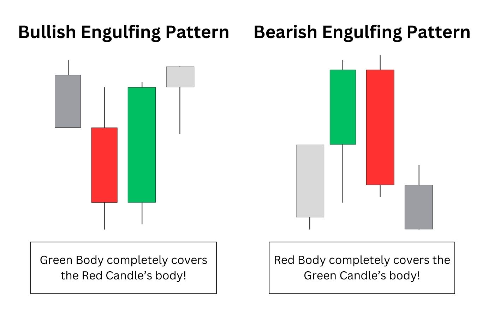
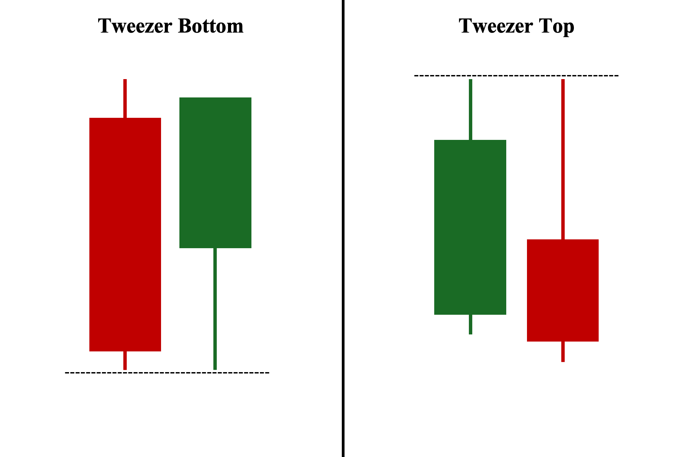
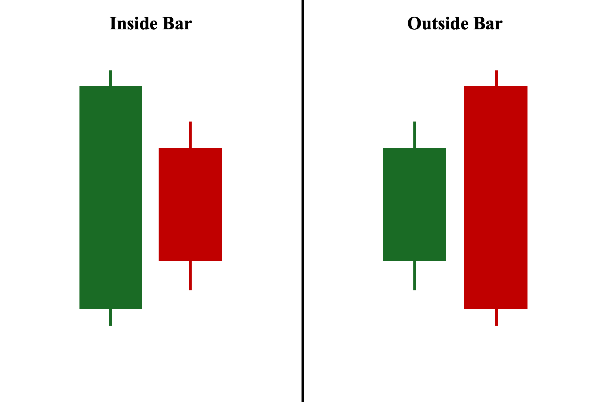
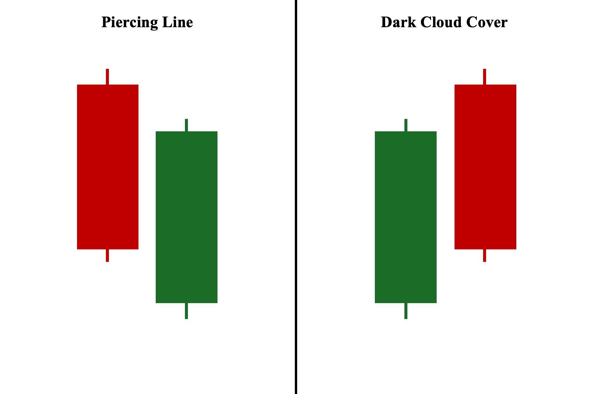

Двойни свещни модели в трейдинга (японски свещи)
Двойните свещни модели се състоят от две последователни свещи и дават по-силен сигнал
в сравнение с единичните модели. Те показват промяна в контрола между купувачи и продавачи
и често сигнализират за обръщане на тренда.
Какво е важно при двойните модели?
- Редът на свещите е от значение
- Размерът на телата показва силата на движението
- Контекстът (трендът преди модела) е ключов
Основни двойни свещни модели
1. Бичо поглъщане (Bullish Engulfing)
Това е модел, при който втората свещ напълно „поглъща“ тялото на първата.
- Първата свещ е червена (меча)
- Втората свещ е зелена (бича) и по-голяма
- Тялото на втората покрива изцяло първата
- Появява се след спад
- Сигнал за възможен обрат нагоре
2. Мечо поглъщане (Bearish Engulfing)
Обратното на бичото поглъщане.
- Първата свещ е зелена
- Втората е червена и по-голяма
- Напълно поглъща първата
- Появява се след възходящ тренд
- Сигнал за възможен спад

3. Пинсети (Tweezer Top и Tweezer Bottom)
Модел, при който две свещи имат почти еднакви върхове или дъна.
Tweezer Bottom (дъно)
- Появява се след спад
- Двете свещи имат почти еднакво дъно
- Сигнал за възможен обрат нагоре
Tweezer Top (връх)
- Появява се след възходящ тренд
- Двете свещи имат почти еднакъв връх
- Сигнал за възможен спад

4. Вътрешна свещ (Inside Bar)
Втората свещ е изцяло в рамките на първата (нейния high и low).
- Показва консолидация и пауза в пазара
- Често се използва за breakout стратегии
- Може да доведе до силно движение след пробив
5. Външна свещ (Outside Bar)
Втората свещ обхваща напълно диапазона (high и low) на първата.
- Показва силна волатилност
- Може да бъде сигнал за обръщане или продължение
- Зависи от посоката на затваряне

6. Dark Cloud Cover (Тъмен облак)
Мечи модел, който показва отслабване на възходящ тренд.
- Първата свещ е силна зелена
- Втората отваря над върха на първата
- Затваря под средата на първата свещ
- Сигнал за възможен спад
7. Piercing Line
Бичи модел – обратното на Dark Cloud Cover.
- Първата свещ е червена
- Втората отваря под дъното на първата
- Затваря над средата на първата свещ
- Сигнал за възможен обрат нагоре

Как да използваш двойните модели?
Двойните модели са по-надеждни от единичните, но все пак трябва да се използват с потвърждение:
- Изчакай затваряне на втората свещ
- Комбинирай с нива на подкрепа/съпротива
- Следи обема – по-голям обем означава по-силен сигнал
Колкото по-ясен и „чист“ е моделът, толкова по-голяма е вероятността да работи.